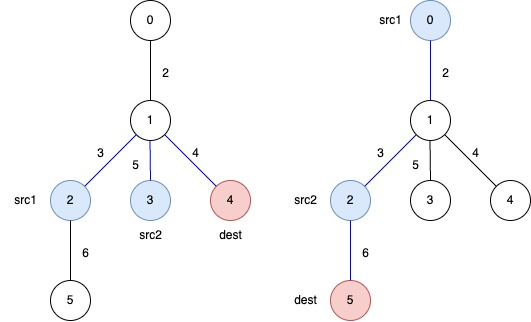
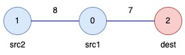

| Category | Difficulty | Likes | Dislikes |
|---|---|---|---|
| Algorithms | Hard | 46 | 4 |
You are given an undirected weighted tree with n nodes, numbered from 0 to n - 1. It is represented by a 2D integer array edges of length n - 1, where edges[i] = [ui, vi, wi] indicates that there is an edge between nodes ui and vi with weight wi.
Additionally, you are given a 2D integer array queries, where queries[j] = [src1j, src2j, destj].
Return an array answer of length equal to queries.length, where answer[j] is the minimum total weight of a subtree such that it is possible to reach destj from both src1j and src2j using edges in this subtree.
A subtree here is any connected subset of nodes and edges of the original tree forming a valid tree.
Example 1:
Input: edges = [[0,1,2],[1,2,3],[1,3,5],[1,4,4],[2,5,6]], queries = [[2,3,4],[0,2,5]]
Output: [12,11]
Explanation:
The blue edges represent one of the subtrees that yield the optimal answer.

answer[0]: The total weight of the selected subtree that ensures a path from src1 = 2 and src2 = 3 to dest = 4 is 3 + 5 + 4 = 12.
answer[1]: The total weight of the selected subtree that ensures a path from src1 = 0 and src2 = 2 to dest = 5 is 2 + 3 + 6 = 11.
Example 2:
Input: edges = [[1,0,8],[0,2,7]], queries = [[0,1,2]]
Output: [15]
Explanation:

answer[0]: The total weight of the selected subtree that ensures a path from src1 = 0 and src2 = 1 to dest = 2 is 8 + 7 = 15.
Constraints:
3 <= n <= 105edges.length == n - 1edges[i].length == 30 <= ui, vi < n1 <= wi <= 1041 <= queries.length <= 105queries[j].length == 30 <= src1j, src2j, destj < nsrc1j, src2j, and destj are pairwise distinct.edges represents a valid tree.